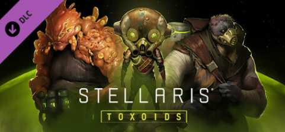
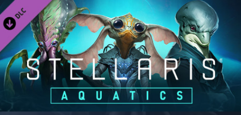
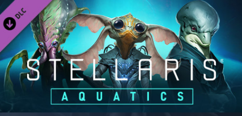

Stellaris


Toxoids Species Pack ger spelare chansen att spela på framtiden för sina planeter för omedelbara vinster och göra de tuffa uppoffringar som krävs för att överleva en fientlig galax.
Köp toxoids dlc:n på: Steam

Aquatics Species Pack! Låt en våg av nya anpassningsbara alternativ för ditt imperium krascha in i Stellaris, med en skattkammare av nya artporträtt, fartygsuppsättningar, ursprung och mer.